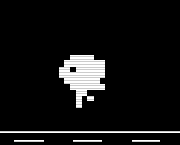

Personalized Learning Tips?
no.
but welcome to bln-c! :D
a slightly organized digital junk drawer
// what you can do here
bln-c v.6f
catalogue
--
browsing, uploading resources in catalogue
messages
--
chat with other users
rate my week
--
rate your week, react, and keep track on them!
gomoku
--
play gomoku multiplayer (syncs in real time! and *stats are recorded)live
sticky wall
--
draw something and post it [*note: your drawing inverts when using mono toggle]
mini notepad
--
make a checklist of things to do
profile card
--
view / make your own profile card spider graph, and download your card!
mono toggle
--
switch to light / dark themes using mono toggle
devlog
--
view devlogs for updates as well!